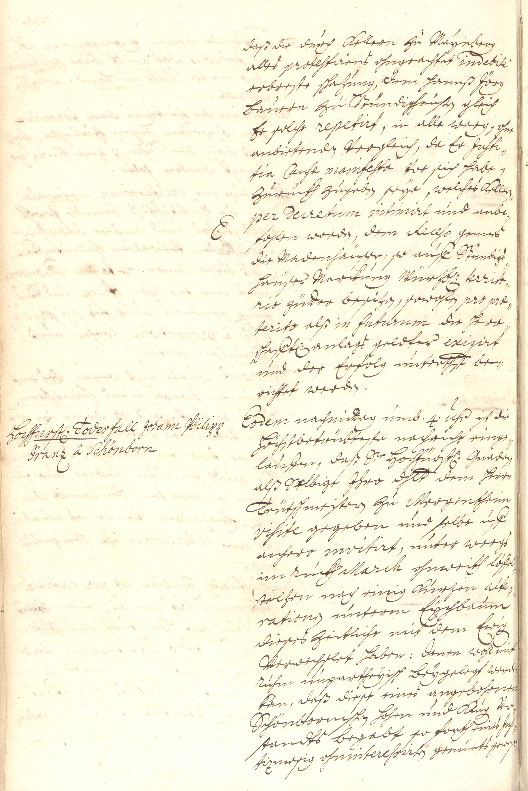

StA Würzburg, Würzburger Hofkammerprotokoll, 1724, fol. 222v



Kommentar
Editor: magdalena.weileder@textgrid.de
Archiv: StA Würzburg
Bestand: Würzburger Hofkammerprotokoll
Signatur: 1724, fol. 222v
Ort: Würzburg
Datum: 1724
Schlagwort: Amtsbuch
Schwierigkeitsgrad: mittel
Kurzbetreff:
Auszug aus dem Hofkammerprotokoll mit Eintrag zum Tod des Fürstbischofs
Auszug aus dem Hofkammerprotokoll mit Eintrag zum Tod des Fürstbischofs
Schreiberhände:
- (S1)
Kommentar:
Auf dieser Seite aus dem Hofkammerprotokoll findet sich der Eintrag zum Tod des Würzburger Fürstbischofs Johann Philipp Franz von Schönborn am 18. August 1724.
Die Einträge sind in einer rechtsgeneigten, spitzen Kurrentschrift geschrieben. Eine eindeutige Unterscheidung von Groß- und Kleinbuchstaben bei v und z, die stets in die Oberlänge reichen, ist nicht möglich, n am Wortende wird häufig gekürzt bzw. verschliffen (z.B. Z. 6: anbietende(n)). ff, tt und st werden ligiert, das c im sch verschliffen.
Für Fremdworte und lateinische Begriffe verwendet der Schreiber humanistische Kursive, gegebenenfalls mit Endungen in Kurrent (Z. 2: protestirens, Z. 26/27: alte-/rationen). Der Inhaltsvermerk am linken Rand weist sowohl Buchstabenformen der Kurrent und Kanzlei als auch der humanistischen Kursive auf, z. B. drei verschiedene h-Formen.
Auf dieser Seite aus dem Hofkammerprotokoll findet sich der Eintrag zum Tod des Würzburger Fürstbischofs Johann Philipp Franz von Schönborn am 18. August 1724.
Die Einträge sind in einer rechtsgeneigten, spitzen Kurrentschrift geschrieben. Eine eindeutige Unterscheidung von Groß- und Kleinbuchstaben bei v und z, die stets in die Oberlänge reichen, ist nicht möglich, n am Wortende wird häufig gekürzt bzw. verschliffen (z.B. Z. 6: anbietende(n)). ff, tt und st werden ligiert, das c im sch verschliffen.
Für Fremdworte und lateinische Begriffe verwendet der Schreiber humanistische Kursive, gegebenenfalls mit Endungen in Kurrent (Z. 2: protestirens, Z. 26/27: alte-/rationen). Der Inhaltsvermerk am linken Rand weist sowohl Buchstabenformen der Kurrent und Kanzlei als auch der humanistischen Kursive auf, z. B. drei verschiedene h-Formen.
Entzifferung
(Absatz Beginn)
1 daß die durch Kellern zu Maynberg
2 alles protestiren(Wechsel des Schriftsystems)s ohngeachtet indebite(Wechsel des Schriftsystems)
3 erbreste schazung, dem hannß Jörg
4 Bauern zu Stündighauße(n) gleich
5 Er solche repetirt(Wechsel des Schriftsystems), in alle weeg, ohne
6 anbietende(n) Vergleich, da Er Justi(Wechsel des Schriftsystems)-
7 tia Causæ manifesta(Wechsel des Schriftsystems) Vor sich habe,
8 Zuruckh zugebe(n) seÿe, welches Keller(n)
9 E(Wechsel des Schriftsystems)(Links nachgetragener Text)per Decretum intimirt(Wechsel des Schriftsystems) und anbe-
10 fohlen worde(n), dem Recess(Wechsel des Schriftsystems) gemees
11 die Madenhäuser, so auff Stündigs-
12 häuser Marckung Würzb(urgischen) territo(Wechsel des Schriftsystems)-
13 rio(Wechsel des Schriftsystems) gütter besize(n), sowohle(n) pro præ(Wechsel des Schriftsystems)-
14 terito(Wechsel des Schriftsystems) alß in futurum(Wechsel des Schriftsystems) die herr-
15 schafft(lichen) anlags geldter exigirt(Wechsel des Schriftsystems)
16 und der Erfolg unterth(änig)st be-
17 richtet werde(n).
18 Hochfürst(licher) Todesfall Johann Philipp(Links nachgetragener Text)Eodem(Wechsel des Schriftsystems) nachmittag umb .4. Uhr ist die
19 Franz â Schönborn(Links nachgetragener Text)Höchstbetrübteste nachricht einge-
20 lauffen, daß S(ein)e Hochfürst(liche) Gnade(n),
21 alß Selbige Jhro d(urc)hl(auch)t dem herrn
22 Teütschmeister(n) zu Mergentheim
23 visite(Wechsel des Schriftsystems) gegeben und selbe uff
24 anhero invitirt(Wechsel des Schriftsystems), unter weegs
25 im Rückh March(Wechsel des Schriftsystems) ohnweith löffel-
26 stelzen nach einig Kurzen alte(Wechsel des Schriftsystems)-
27 ration(Wechsel des Schriftsystems)e(n) unterm Eÿchbaum
28 dieses zeitliche mit dem Ewig(en)
29 Verwechslet haben: denen wohl mit
30 Ruhm unpartheÿisch Beÿgelegt werde(n)
31 kan, daß diese eines angebohrnen
32 Schönbornische(n) hohen und Klug(en) Ver-
33 standts Begabtso forth eines Jus(Wechsel des Schriftsystems)-
34 tiz(Wechsel des Schriftsystems)mesig ohninteressiert(Wechsel des Schriftsystems)e(n) gemüeths gewes(en)
(Absatz Ende)
Transkription
(Absatz Beginn)
1 daß die durch Kellern zu Maynberg
2 alles protestiren(Wechsel des Schriftsystems)s ohngeachtet indebite(Wechsel des Schriftsystems)
3 erbreste schazung, dem Hannß Jörg,
4 bauern zu Stündighaußen gleich
5 er solche repetirt(Wechsel des Schriftsystems), in alle weeg, ohne
6 anbietenden vergleich, da er justi(Wechsel des Schriftsystems)-
7 tia causae manifestae(Wechsel des Schriftsystems) vor sich habe,
8 zuruckhzugeben seÿe, welches Kellern
9 E(Wechsel des Schriftsystems)(Links nachgetragener Text)per decretum intimirt(Wechsel des Schriftsystems) und anbe-
10 fohlen worden, dem recess(Wechsel des Schriftsystems) gemees
11 die madenhäuser, so auff Stündigs-
12 häuser marckung würzburgischen territo(Wechsel des Schriftsystems)-
13 rio(Wechsel des Schriftsystems) gütter besizen, sowohlen pro prae(Wechsel des Schriftsystems)-
14 terito(Wechsel des Schriftsystems) alß in futurum(Wechsel des Schriftsystems), die herr-
15 schafftlichen anlagsgeldter exigirt(Wechsel des Schriftsystems)
16 und der erfolg unterthänigst be-
17 richtet werden.
18 Hochfürstlicher todesfall Johann Philipp(Links nachgetragener Text)Eodem(Wechsel des Schriftsystems) nachmittag umb 4 uhr ist die
19 Franz â Schönborn(Links nachgetragener Text) höchstbetrübteste nachricht einge-
20 lauffen, daß seine hochfürstliche gnaden,
21 alß selbige Ihro durchlaucht dem herrn
22 teütschmeistern zu Mergentheim
23 visite(Wechsel des Schriftsystems) gegeben und selbe uff
24 anhero invitirt(Wechsel des Schriftsystems), unterweegs
25 im rückhmarch(Wechsel des Schriftsystems) ohnweith Löffel-
26 stelzen nach einig kurzen alte(Wechsel des Schriftsystems)-
27 ration(Wechsel des Schriftsystems)en unterm eÿchbaum
28 dieses zeitliche mit dem ewigen
29 verwechslet haben. Denen wohl mit
30 ruhm unpartheÿisch beÿgelegt werden
31 kan. Daß diese eines angebohrnen
32 schönbornischen hohen und klugen ver-
33 standts begabt, so forth eines jus(Wechsel des Schriftsystems)-
34 tiz(Wechsel des Schriftsystems)mesig ohninteressiert(Wechsel des Schriftsystems)en gemüeths gewesen
(Absatz Ende)